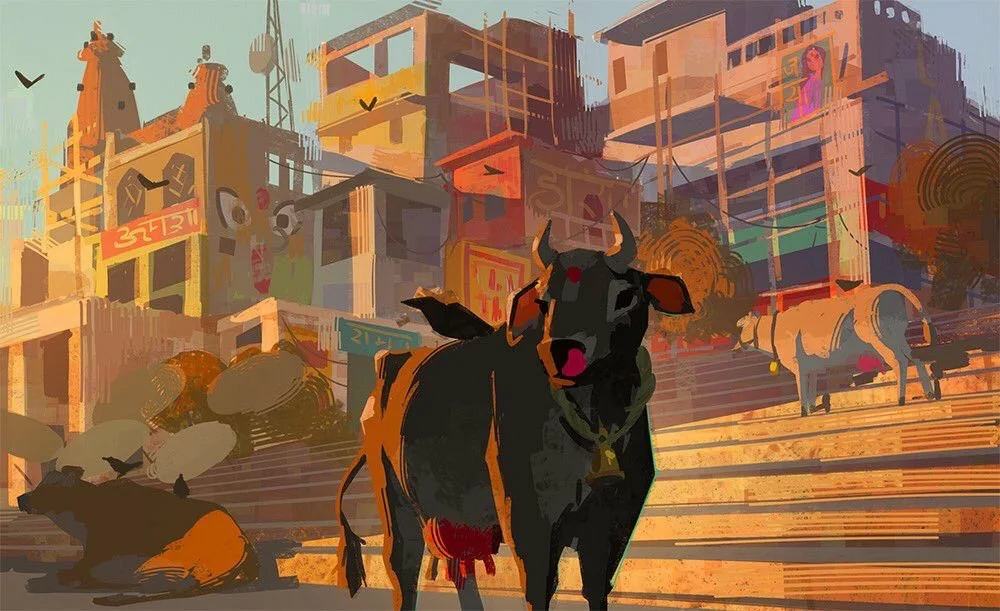
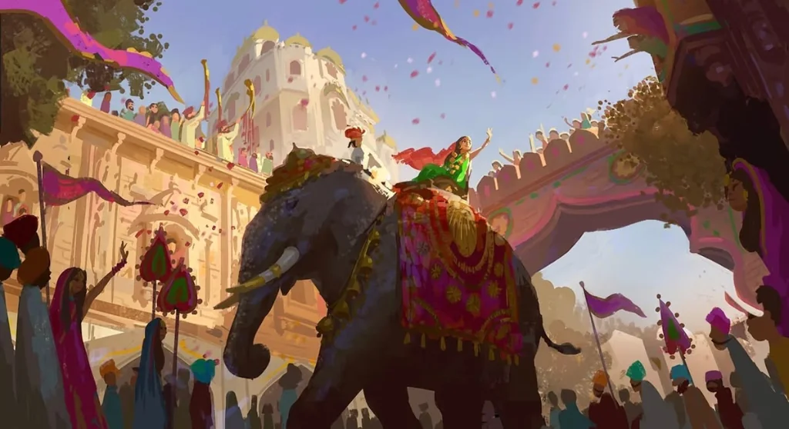

Vrindavan's native monkeys in areas around Shri Bankey Bihari, Nidhivan, Seva Kunj, and Radha Damodar are notorious for swiftly snatching eyeglasses, sunglasses, mobile phones, purses, and food items. Always secure your spectacles with neck retainers or store them inside zipped backpacks before entering temple gullies. Never tease or feed monkeys directly by hand.
Standard Temple & Parikrama Code
Essential observances for all pilgrims visiting Brij Dham.
1. Temple Dress Code & Footwear
Wear respectful traditional attire (Kurta-Pajama, Dhoti, Saree, Salwar Kameez). Sleeveless shirts, short skirts, and shorts are strictly discouraged inside historic sanctums. Remove all leather shoes, belts, and wallets before entering temple courtyards.
2. Govardhan & Vrindavan Parikrama Rules
Always circumambulate in a clockwise direction (keeping Giriraj Govardhan or the deity on your right side). Never climb or step on the sacred stones of Govardhan hill. Keep drinking water handy and avoid walking bare-foot on heated summer asphalt during midday.
3. Photography & Sanctum Respect
Photography and videography are strictly prohibited inside the inner garbha griha (sanctum sanctorum) of Shri Bankey Bihari, Radha Raman, and other major temples. Keep mobile phones in silent mode and respect private prayer moments.
4. Pure Sattvic Food & Prasadam Ethics
Maintain spiritual purity by consuming only pure vegetarian Vaishnava Prasadam without onion and garlic. Non-vegetarian food, alcohol, and smoking are strictly forbidden throughout all sacred municipal limits of Brij Dham.
Pilgrim Care for Senior Citizens & Families
How to travel safely and comfortably with children and elderly devotees.
Sacred Observances in Picture
Key spiritual practices to honor the sanctity of Brij Dham.
Store glasses, phones, and food items securely inside zipped pouches in monkey-dense lanes.

Gaumata SevaRespect holy cows, dispose of offerings responsibly, and leave footwear outside temple precincts.

Dham ReverenceFollow marked soft sand paths during circumambulation and never step onto sacred Giri Govardhan rocks.